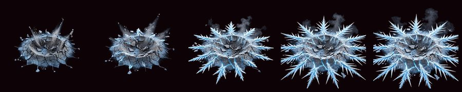
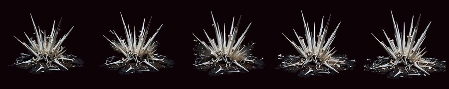
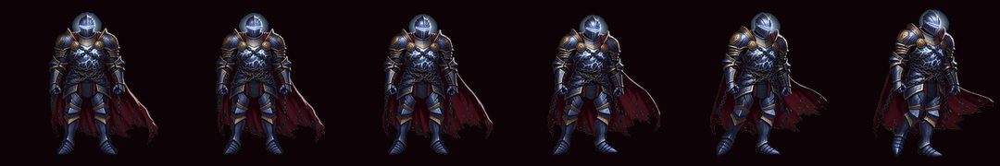
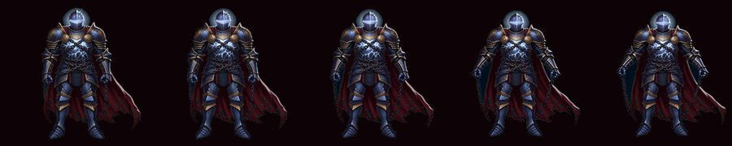
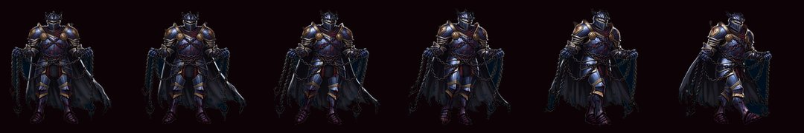
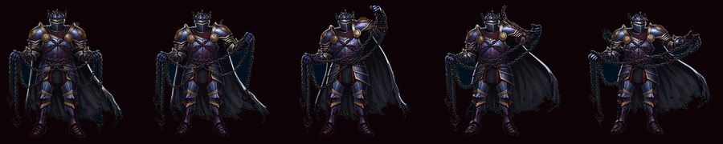
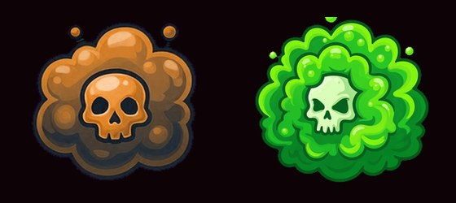

手搓廣告遊戲選集 · 吸血鬼復仇 v2 · 美術完成
額度儲值後剩下的 6 支一次跑完、零失敗。不朽者與血鎖裁判都有走路與攻擊動畫了， 碎岩衝擊與骨釘暴雨也有自己的特效。全部已進 Assets 並 commit。
額度儲值之後，剩下的 6 支影片一次跑完、零失敗，
疫毒領域的顏色也修好了。全部已經進 Assets/ 並 commit。

Chill 減速
這兩組進去之後，碎岩衝擊不再放出寒冰新星的冰波、骨釘暴雨不再放出隕石的火焰。
大地崩裂 與 白骨墓場（進化版）沿用各自基礎武器的素材，
跟既有 7 把進化的做法一致。




兩個都是用立繪當參考圖走 image-to-video，所以造型跟立繪對得上。
VrWalkInk 已重跑（不朽者著墨 92.7%、血鎖裁判 94.3%），
所以它們在畫面上的高度會跟既有五隻一致，不會因為素材留白多寡而忽大忽小。

原因就是綠幕逼模型把主體改色躲開幕色。改用洋紅幕 #FF00FF 之後一次就對。
cut_sheet.py 的 despill 條件也一般化成「背景是高飽和純色」，綠幕與洋紅幕都吃。
CLAUDE.md 的「花錢的東西」底下多了一節，ai-asset-pipeline 的硬性規則也改了：
| 預設 | 綠幕 #00FF00，完全均勻、無漸層、無光暈、無地面陰影 |
| 主體本身是綠色系時 | 改用洋紅幕 #FF00FF |
| 去背方式 | 本地演算法，不要用 AI 重繪去背 |
三條各自綁著一次真的做壞的東西（不朽者在黑背景下裂成三塊、毒霧被改色、
gpt-image-1 的 edits 把鋼藍甲重繪成灰甲），所以之後不會再退回舊做法。
| 項目 | 金額 |
|---|---|
| 上一輪已確定 | $1.56 |
| 碎岩衝擊／骨釘暴雨 特效 ×2 | $0.64 |
| 不朽者 走路＋攻擊 ×2 | $0.64 |
| 血鎖裁判 走路＋攻擊 ×2 | $0.64 |
| 疫毒領域重生（洋紅幕） | $0.20 |
| 已確定合計 | $3.68 |
| 先前 2 支輪詢 403 的 | $0.64（仍不確定有沒有被計費） |
| 最多可能 | $4.32 |
原本估的上限是「含三成緩衝約 $4.00」，已確定的 $3.68 在裡面。
批次腳本第一次跑的時候看起來像「全部跳過」，其實是兩個 shell 行為：
cd 再用 $(dirname "$0") 會以新的工作目錄解析相對路徑 → 找不到清單檔，
而且 exit code 還是 0，背景任務回報「完成」。set -u 之下展開空陣列會噴
unbound variable 直接中斷（新版 bash 不會）。要寫 ${args[@]+"${args[@]}"}。兩個都修掉了，腳本現在失敗會反映在 exit code 上。
（另外 zsh 不做未加引號的斷詞這件事，這一輪踩了三次——--image、--frames
都中過，這是既有 skill 文件裡就記過的坑。）
美術只驗過素材本身（幀數、透明度、洋紅底合成沒有毛邊、著墨比例）。
遊戲裡實際跑起來長怎樣還沒看過——那要開 Unity（Library/ 之前清掉了，
第一次匯入約十幾分鐘）。這跟 v2 那五項功能的實機驗證是同一件事，
建議一次做完。跟我說一聲我就開跑。